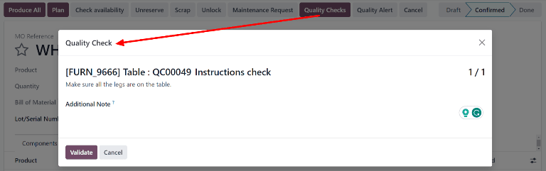

Controles de calidad¶
Los controles de calidad son inspecciones manuales que llevan a cabo los empleados y se usan para asegurar la calidad de los productos. En Odoo, puede realizar un control de calidad para un solo producto o para varios que tengan la misma operación de inventario o la misma orden de fabricación.
Al usar un punto de control de calidad podrá crear controles de calidad de forma automática en intervalos regulares. Cuando se crea un control de calidad mediante un punto de control de calidad, este aparecerá en una orden de fabricación o de inventario y se le solicitará al empleado encargado de procesar la orden que lo complete. Para una explicación más detallada sobre la creación y configuración de los puntos de control de calidad, consulte la documentación correspondiente.
Si bien los controles de calidad se crean casi siempre de manera automática a través de un |PCC|, también es posible crearlos de manera manual. Crear un control de manera manual es útil cuando un empleado quiere programar un control de calidad que solo ocurrirá una vez, o desea registrar un control espontáneo.
Control de calidad manual¶
Para crear un solo control de calidad, vaya a y haga clic en Nuevo. En el formulario del control de calidad, comience seleccionando una opción desde el menú desplegable Control por:
Operación: solicita un control para una operación entera (por ejemplo, orden de envío) y todos los productos involucrados.
Producto: solicita un control para cada unidad de un producto que es parte de una operación (por ejemplo, cada unidad de un producto dentro de una orden de envío).
Cantidad: solicita un control por cada cantidad de un producto que es parte de una operación (por ejemplo, un control por cada cinco unidades de un producto dentro de una orden de envío). Seleccionar Cantidad también activa un menú desplegable de Lote/Número de serie desde donde podrá seleccionar un lote o número de serie específico para el que se debe llevar a cabo el control de calidad.
Luego, seleccione una operación de inventario desde el menú desplegable de Recolección o una orden de fabricación desde el menú desplegable de Orden de producción. Es necesario porque Odoo necesita saber para que operación se debe llevar a cabo el control de calidad.
Si el control de calidad se debe asignar a un |PCC| específico, selecciónelo desde el menú desplegable de Punto de control. Esto es útil si el control de calidad se crea manualmente, pero aún debe especificarse que pertenece a un |PCC| particular.
Seleccione un tipo de control de calidad desde el campo desplegable Tipo:
Instrucciones: proporciona instrucciones especificas acerca de cómo llevar a cabo el control de calidad.
Tomar fotografía: requiere que se adjunte una fotografía al control antes de que se complete el proceso.
Aprobado - No aprobado: se usa cuando el producto que se está revisando debe cumplir ciertos criterios para aprobar el control de calidad.
Seleccionar Medida activa un campo de entrada para Medida en donde deberá escribir una medida antes de que se complete el control de calidad.
Seleccionar Hoja de trabajo activa un campo desplegable de Plantilla de calidad. Úselo para seleccionar una hoja de trabajo de calidad que se deba llenar para completar el control de calidad.
En el campo Equipo, seleccione el equipo de calidad que será responsable del control de calidad. En el campo Empresa, seleccione la empresa dueña del producto que se inspecciona.
En la pestaña de Notas en la parte inferior del formulario, escriba cualquier instrucción relevante en la ventana de texto Instrucciones (por ejemplo, “Adjuntar una fotografía del producto”). En la ventana para escribir texto de Notas, escriba cualquier información relevante acerca del proceso de la revisión de calidad (quién lo creó, por qué se creó, etc.)
Finalmente, si el control se procesa inmediatamente, haga clic en el botón de Aprobar ubicado en la parte superior izquierda de la pantalla si el control de calidad es correcto. Si no es así, haga clic en No aprobar.

Procesar un control de calidad¶
Puede procesar los controles de calidad directamente en la página del control de calidad o desde una orden de fabricación o inventario según lo requiera el control. Otra opción es, si un control de calidad se crea para una operación de trabajo específica, puede procesar el control desde la vista de tableta para la orden de trabajo.
Nota
No puede crear de forma manual un solo control de calidad asignado a una operación de una orden de trabajo específica, estos los puede crear solo para las operaciones de una orden de trabajo a través de un punto de control de calidad. Consulte la documentación acerca de los puntos de control de calidad para obtener más información acerca de como configurar un punto de control de calidad que creará controles para una operación específica de una orden de trabajo.
Página del control de calidad¶
Para procesar un control de calidad desde la página del control, vaya a y seleccione el control que procesará. Siga los pasos para completar el control descritos en el campo Instrucciones de la pestaña Notas en la parte inferior de la página.
Si aprueba el control de calidad, haga clic en el botón de Aprobar ubicado en la parte superior de la página. Si el control no pasa, haga clic en el botón de No aprobar.
Control de calidad en la orden¶
Para procesar un control de calidad en una orden, seleccione una orden de fabricación o de inventario (recepción, envío, devoluciones, etc.) según lo que requiera el control. Puede seleccionar las órdenes de fabricación en y haga clic en una orden. Puede seleccionar las órdenes de inventario en y haciendo clic en el botón de # Por procesar en una tarjeta de operación y seleccionando una orden.
En la orden de inventario o de fabricación seleccionada aparecerá un botón morado de Controles de calidad en la parte superior de la orden. Haga clic en el botón para abrir la ventana emergente de Control de calidad, lo que mostrará todos los controles de calidad que se requieren para esa orden.
Siga las instrucciones que aparecen en la ventana emergente de Control de calidad. Si se está procesando un control tipo Aprobado - No aprobado en la parte inferior de la ventana emergente. Para el resto de los tipos de control de calidad, aparecerá un botón de Validar. Haga clic sobre él para completar el control de calidad.
Control de calidad en una orden de trabajo¶
Para procesar un control de calidad para una orden de trabajo, vaya a y seleccione una orden de fabricación. Seleccione la pestaña Órdenes de trabajo y haga clic en el botón de vista de tableta 📱 (tableta) para la orden de trabajo que requiere el control de calidad.
Con la vista de tableta abierta, complete los pasos descritos del lado izquierdo de la pantalla hasta que llegue al paso de control de calidad; luego siga las instrucciones que aparecen en la parte superior de la pantalla. Si está procesando un control de tipo Aprobado - No aprobado, complete el control haciendo clic en Aprobar o No aprobar en la parte superior de la pantalla. Para el resto de los tipos de control de calidad, aparecerá un botón de Siguiente. Haga clic en él para completar el control de calidad y continuar al siguiente paso de la orden de trabajo.